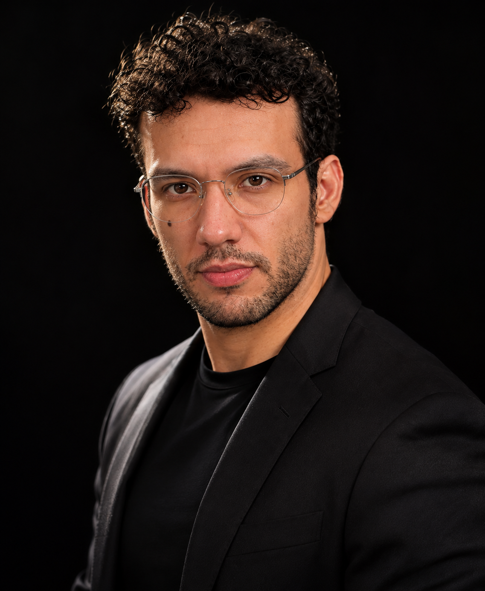
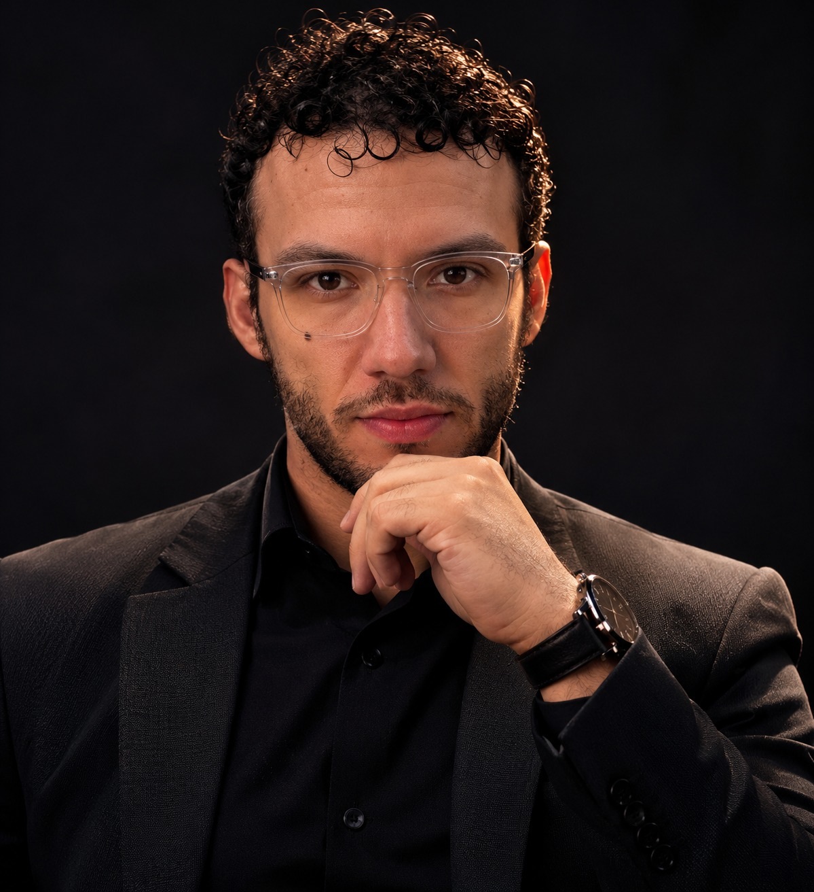

Visión de inversión
Comprender los negocios, identificar tendencias de innovación y desarrollar una tesis con horizonte de largo plazo.

MENTORÍA & ANÁLISIS DE INVERSIONES
Construye una visión propia de los mercados con una mentoría que conecta análisis, experiencia y gestión del riesgo.
Agenda una conversación ↗Descubre mi enfoque ↓Perspectiva de inversor.
Disciplina de trader.
01 — EL ENFOQUE
Una buena decisión empieza mucho antes de entrar al mercado. Mi enfoque reúne tres dimensiones que trabajo contigo.
Comprender los negocios, identificar tendencias de innovación y desarrollar una tesis con horizonte de largo plazo.
Conectar el contexto con el análisis. Explorar acciones, futuros, opciones y criptomonedas con una perspectiva estructurada.
Definir escenarios, reconocer la incertidumbre y construir un proceso de decisión coherente con tus objetivos.

EXPERIENCIA QUE SE COMPARTE.02 — CONOCE A TU MENTOR
Más de una década explorando los mercados y las ideas que transforman el futuro.
Soy inversor con más de 10 años de experiencia en los mercados financieros, con especial interés en tecnología e innovación. Mi trayectoria incluye inversiones tempranas en compañías como NVIDIA, Palantir, AMD, Google y Tesla.
Cuento con una maestría en Administración y Finanzas (MBA) por Tecmilenio, obtenida en 2018, y experiencia operando futuros, opciones y criptomonedas.
En ROTE Capital comparto esa perspectiva a través de la mentoría y el análisis de inversiones. Mi propósito es ayudarte a comprender mejor los mercados, hacer preguntas más precisas y desarrollar un criterio propio.
TECNOLOGÍA E INNOVACIÓN EN MI TRAYECTORIA DE INVERSIÓN
03 — TRABAJEMOS JUNTOS
Partimos de tu experiencia y de lo que quieres comprender para dar dirección a nuestro trabajo.
Trabaja tu lectura del mercado y tu proceso de operación en sesiones enfocadas en tus necesidades.
Profundiza en las ideas, empresas y tendencias que dan forma a tus decisiones de inversión.
04 — EMPIEZA UNA CONVERSACIÓN
Cuéntame dónde estás y qué te gustaría trabajar. Recibiré tu solicitud y te contactaré por correo para acordar una fecha y conversar sobre la mentoría.
ANTES DE CONVERSAR
Puedes solicitar una conversación tanto si estás comenzando como si ya operas o inviertes. En el primer contacto revisaremos tus objetivos y si la mentoría encaja con lo que necesitas.
Envía el formulario con tu disponibilidad y zona horaria. Te contactaré al correo que indiques para acordar la fecha, el formato y los detalles de la sesión.
El alcance, la frecuencia y los honorarios se acuerdan directamente según tus objetivos. Puedes compartir lo que buscas en el formulario para que conversemos sobre una propuesta.